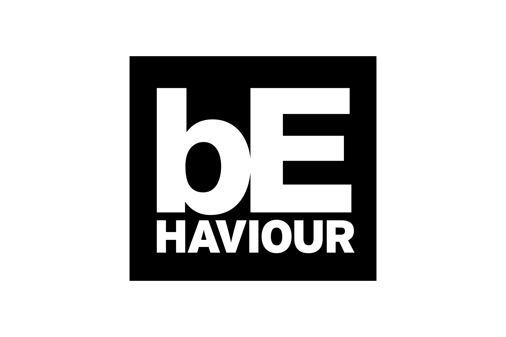

HISTÓRIA
Dead by Daylight é um jogo de terror multijogador assimétrico lançado em 2016 pela Behaviour Interactive. A história gira em torno da Entidade, uma força cósmica maligna que se alimenta de esperança e medo. Ela arrasta pessoas de várias épocas e realidades para um reino sombrio, forçando-as a participar de um ciclo infinito de caçadas mortais.